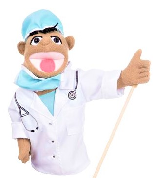

Torah Kids Puppets
Acerca de Nosotros
Acerca de Nosotros
Somos un grupo de personas apacionadas con llevar de una manera fácil sencilla y divertida La Torah.
Tratamos de hacerlo de una forma que tu puedas entenderlo y que tanto pequeños como grandes se diviertan.Nosotros te introduciremos hacia la Torah el Tanaj y an algunos casos también te ayudaremos a entender el Brit Hadasháh (NT).
También te contaremos lo que nuestros sabios dicen y lo que esta escrito en los libros que van pasando de generación en generación; Es decir, nosotros te mostraremos lo que dice: La Torah, El Tanaj y el Brit Hadasháh (NT) asà como lo que nuestros sabios interpretaron en algunos libros y escritos como el Talmud, El Midrásh, La Mishná, entre otros.
Nosotros trataremos de que tu puedas entender todo lo que decimos, y trataremos de explicarte las escrituras de una forma fácil y sencilla. También dejaremos a tu disposición todo los recursos que utilizamos.
Por Último queremos decirte que puedes darnos tus sugerencias, al igual que nosotros trataremos de adaptar toda la sabiduria que nuestros sabios nos han dejado para que podamos comprenderla y aprenderla de la mejor manera. Shalom!! שלום!!
.png "Yosefito")
? Un poco
Es Nuestro Presentador además es uno de nuestros personajes más graciosos, te da un resumen de la Parashat, temas o estudios. Asimismo te explica de una manera fácil y sencilla. Es nuestro personaje principal de Toráh Kids Puppets. Es el director de Produccion.
?¿Que hace?
El junto con la Princesa te introducirá a el tema, asimismo te explicara de una forma fácil, sencilla y divertida. Es nuestra presentador principal por lo cual lo verás en la mayotia de los episodios y te dara una breve introducción y un resumen acerca de lo que trata el episodio.

?Acerca de
Es una de nuestras reporteras y presentadoras. Además de ser una Princesa de Castillo Peach. Hace unas cuantas graciosadas y una que otra vez le gusta cocinar y hacer panquesillos. Ella tiene el cabello cafe claro, ojos azules y un vestido color lila.
?¿Que hace?
Ella te introducirá a el tema, asimismo te explicara de una forma fácil, sencilla y divertida. Es nuestra presentadora por lo cual ella te dirá de una forma breve y resumida acerca de lo que trata el episodio.
.png "Arush")
?Boom!!! - Un Poco
Es nuestro bombero, asi que es el el experto en la llama interna 🔥. También sabe como apagar las llamas que pudiesen surgir entre nosotros. Arush te explica de una forma resumida, super sencilla y fácil de comprender
?¿Que hace?
Te da un resumen de la Parashat fácil de entender y de una forma super sencilla. También te ayuda a entender lo que no sabes diciéndotelo de una forma sencilla y resumida, te dará una pequeña introducción y te ayudará a aprender la Toráh.

?El Doc
Es Nuestro Médico🩺🥼👨â€âš•ï¸ por lo cual sabe como arreglar los corazoncitos⤠rotitos💔. Te dará un resumen de la Parashat, temas o estudios. Asimismo te explica de una manera detallada para que no pierdas ni un solo detalle. Es nuestro jefe de cámaras y director de Edición.
?¿Que hace?
Es quién te explica de manera detallada todo lo que tienes que arpender, también trata de que no te pierdas ni un solo detalle para que puedas aprenderlo todo. El Doctor te dará primero un breve resumen para después poder detallar todo el tema. Es nuestro jefe y director de Cámaras y Edición - 🎥📹🎦📷📸📽 -. Es quién graba a Yosef y La Princesa Peach asà como es quién edita los Videos y Este mismo Sitio Web!! Asà que te mando un Saludo - Del Doctor Avraham -. Aaaaah por cierto se meolvidó contarte que me llamo Avraham

?Un PoquitÃn
Es Nuestro Camellito 🐫. El cuál aparece en unas cuantas veces especiales y cuando está de buen humor. También el te acompañará en todo este recorrido atavés de la travesÃa 🗺🌠en el Estudio de la Torah 📙. También es quién transporta a Yosef durante la explicación de la Parashat y la Torah.
?¿Que hace?
Es el transporte especial de Yosef. Transporta a Yosef mientras él explica la Parashat o te explica la Torah. También nos acompaña durante el desierto y en unos cuántos viajes. Y por último quiero decirte que me llamo GamalÃn. Aunque todos me dicen de cariño Gamelin 🐫

?Un Poco Acerca de
Es Nuestro Monito 🐵. El cuál Hace unas cuantas chistosadas, y lleva un guante en la cabeza para hacerte reÃr. Buba te acompañará unas cuantas veces en tu trayecto de aprendizaje de la Torah.
?¿Que hace?
Ayuda a el doctor en las cámaras y cocina un poco para darnos una pequeña merienda.

?Un Poco Acerca de
Es una de Nuestras Vacas trasnportadoras y lecheras 🐮🐄. Meri Muu es la vaca de la Princesa Peach. Le gusta llevar a cualquier lugar a la princesa Peach, por lo que podrÃa decirse que es el Transporte de la Princesa Peach. También le gusta dar de su leche a todos nuestros personajes.
?¿Que hace?
Es una de Nuestras Transportadoras y en todas las mañanas nos da rica leche y hace unas apariciones especiales en la seccion de Kosher.
.webp)